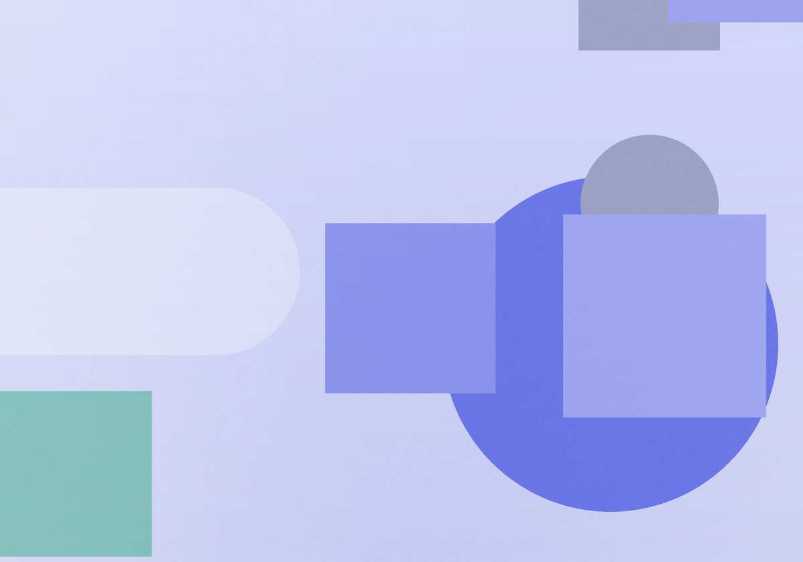
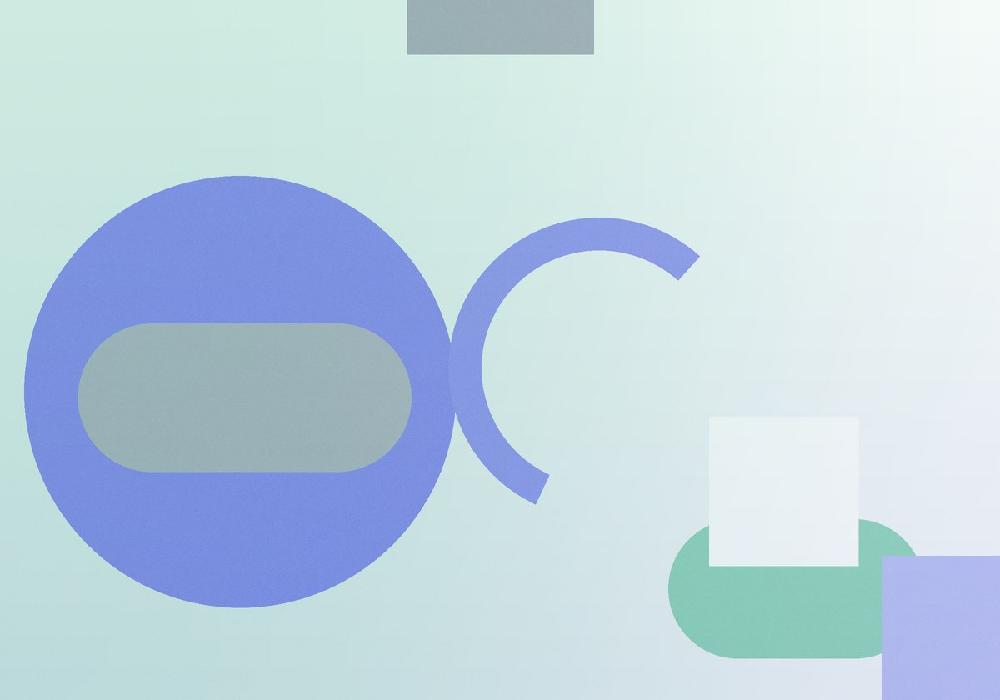

Blaise Ekindi
Directeur pédagogique
Ingénieur en informatique, quinze ans en société de services avant de prendre la direction pédagogique. Il construit les programmes et les met à jour chaque année.
Accueil / Le centre
Ouvert en 2012 à Bonamoussadi, Horizon Numérique a formé plus de 2 400 apprenants. Voici notre histoire, notre équipe et notre façon d'enseigner.
L'institut est né en 2012 dans deux salles louées au carrefour Kotto, avec douze ordinateurs de récupération et une seule filière : la maintenance informatique. Le fondateur, lui même technicien, partait d'un constat simple. Beaucoup de jeunes sortaient de l'université sans compétence directement utilisable, pendant que les entreprises de Douala cherchaient des techniciens qu'elles ne trouvaient pas.
Quatorze ans plus tard, nous occupons un bâtiment entier, nous comptons cinq filières et deux laboratoires. Ce qui n'a pas changé, c'est la règle de départ : nous n'ouvrons une filière que si les entreprises de la région recrutent réellement sur ces profils. C'est pour cela que nous n'avons pas de filière en intelligence artificielle ni en blockchain, malgré les demandes.
Un apprenant qui n'a fait que des exercices ne sait pas travailler. Chez nous, chaque filière est rythmée par des projets réels : un site pour un commerce du quartier, le câblage complet d'un bureau, la campagne de communication d'une association. Les apprenants travaillent en équipe, avec des délais et un commanditaire qui donne son avis.
Le projet de fin de formation est présenté devant un jury qui comprend un professionnel extérieur. C'est ce projet que les anciens montrent en entretien d'embauche, et c'est souvent lui qui emporte la décision.
La moitié de nos apprenants travaillent déjà. Les cours du soir se tiennent de 18h à 21h, du lundi au vendredi, avec le même programme et les mêmes enseignants que les cours du jour. Le tarif est identique. La seule différence est le rythme, un peu plus étalé sur les filières longues.

Une salle de cours, carrefour Kotto, Bonamoussadi
Nos formateurs ne sont pas des enseignants de carrière. Ils travaillent ou ont travaillé sur le terrain, ce qui évite d'enseigner des méthodes que plus personne n'utilise.
Directeur pédagogique
Ingénieur en informatique, quinze ans en société de services avant de prendre la direction pédagogique. Il construit les programmes et les met à jour chaque année.
Responsable des filières développement
Développeuse depuis douze ans, toujours en activité sur des projets clients. Elle enseigne le développement web et encadre les projets de fin de formation.
Responsable réseaux et systèmes
Certifié CCNA, ancien administrateur réseaux dans une banque de la place. Il tient le laboratoire réseaux et prépare aux certifications.
Responsable du placement
Elle démarche les entreprises, place les stagiaires et suit les anciens pendant les six mois qui suivent la formation.

Le secrétariat est ouvert du lundi au samedi. Vous pouvez assister à un cours, voir les laboratoires et parler aux apprenants en formation, sans rendez vous.